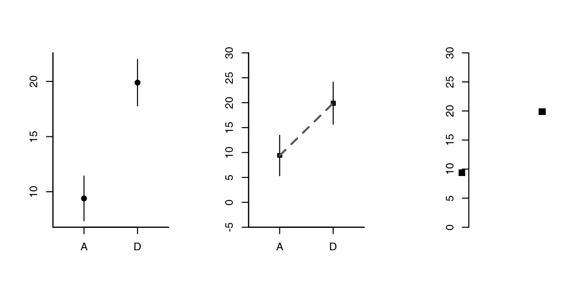
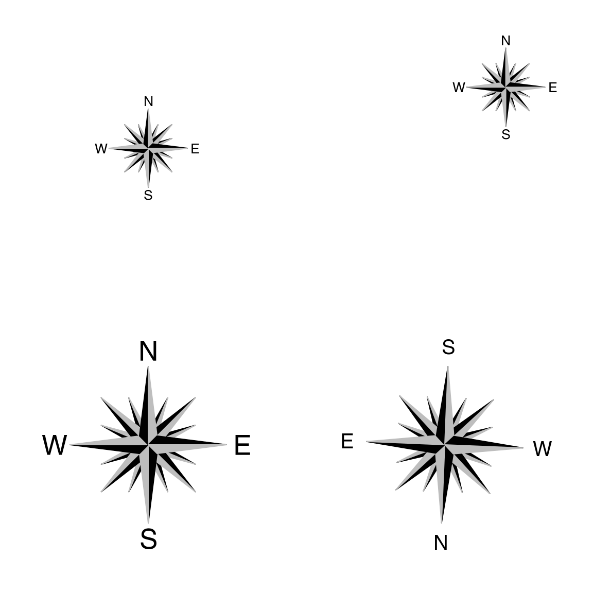
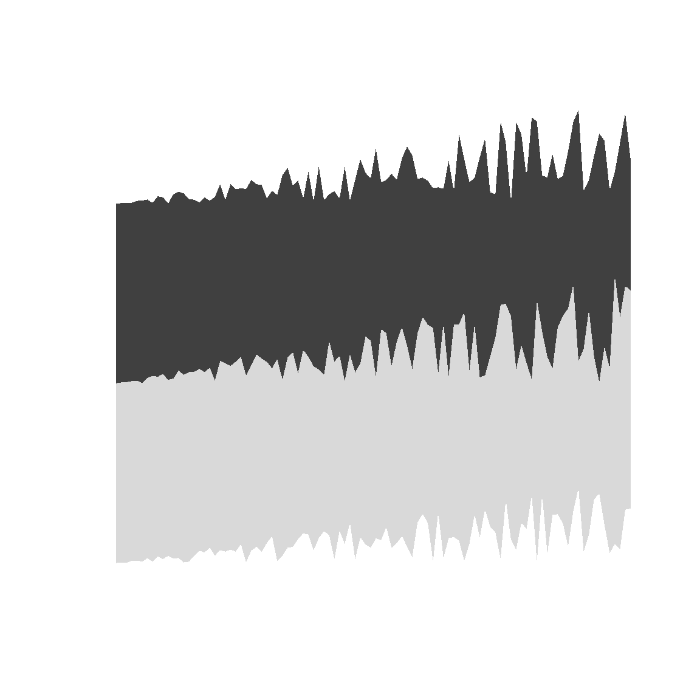
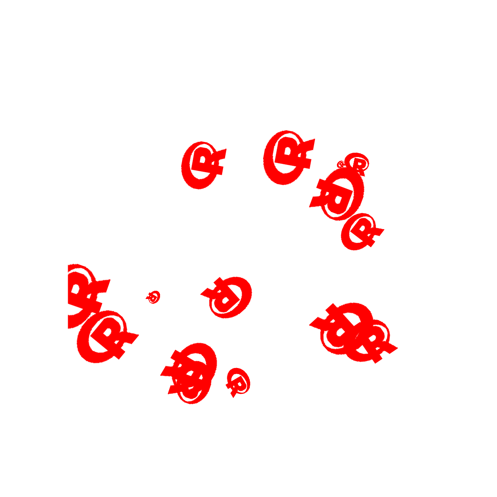

‘graphicsutils’ in a nutshell
Kevin Cazelles
Source:vignettes/graphicsutilsDemo.Rmd
graphicsutilsDemo.RmdAbstract
The package graphicsutils is a set of miscellaneous functions to be used with the graphics library.Introduction
The “graphicsutils” package proposes a set of functions that ease the use of the graphics package. As this package is simply a set of function I decide to design the vignette as a cook book exemplifying the functions implemented.
Empty your plot plot0()
It’s often useful to empty a plot. The plot0 function makes it very easy to do so. Moreover the argument fill color the plot region (it is equivalent to calling the plotAreaColor()).
par(mar=c(1,1,1,1), mfrow=c(2,2))
#
plot0()
text(0, 0, "plot0")
#
plot0(fill="#8eb5e3")
#
plot0()
plotAreaColor(col="#8eb5e3")
#
plot0()
plotAreaColor(col="#8eb5e3", border="grey20", lty=2, lwd=4)
plot0() and plotAreaColor()
box2()
The box2() function allows the user to add any axes around the plot. A not so bad limitation of the box() function is does not allowed all the combination of axes. box2() proposes a simple way to select the sides to be added on the plot: 1 = bottom; 2 = left; 3 = top; 4 = right.
par(mar=rep(2,4))
plot0()
box2(which="figure", lwd=2, fill="grey30")
box2(side=12, lwd=2, fill="grey80")
axis(1)
axis(2)
circles()
par(mar=c(1,1,1,1), mfrow=c(2,2))
plot0()
circles(0, 0, 1)
plot0()
circles(0, 0, seq(0,1,0.2))
plot0()
circles(0, 0, seq(0,1,0.2), lty=2, lwd=1.4)
plot0()
circles(0, 0 ,seq(0,1,0.2), from=pi, col="#BBBBFF88", lty=2, lwd=1.4)
plotMeans()
dataset <- data.frame(dat=c(rnorm(50, 10, 2), rnorm(50, 20, 2)) , grp=rep(c('A','D'), each=50))
graphics::par(mfrow=c(1,3))
plotMeans(dat~grp, data=dataset, pch=19)
##
plotMeans(dat~grp, data=dataset, FUN_err= function(x) sd(x)*2, pch=15,
ylim=c(-5,30), yaxs='i', connect=TRUE, args_con=list(lwd=2, lty=2, col='grey35'))
##
ser <- function(x) sd(x)/sqrt(length(x))
plot0(c(0,4), c(0,30))
plotMeans(dat~grp, data=dataset, FUN_err=ser, pch=15,
draw_axis=FALSE, add=TRUE, seqx=c(.5,3.5), mar=c(6,6,1,1), cex=1.4)
graphics::axis(2)
compassRose
par(mfrow=c(2,2), mar=rep(1,4))
##
plot0(c(-1,1), asp=1)
compassRose(0, 0)
##
plot0(c(-1,1), asp=1)
compassRose(0.5, 0.5)
##
plot0(c(-1,1), asp=1)
compassRose(0, 0, cex.cr=2)
##
plot0(c(-1,1), asp=1)
compassRose(0, 0, rot=.75*pi, cex.cr=2, cex.let=1.5, offset=-1.25)
envelop
plot0(c(0,10),c(0,10))
sz <- 100
seqx <- seq(0, 10, length.out=sz)
seqy1 <- 0.2*seqx*runif(sz, 0, 1)
seqy2 <- 4+0.25*seqx*runif(sz, 0, 1)
seqy3 <- 8+0.25*seqx*runif(sz, 0, 1)
envelop(seqx, seqy1, seqy2, col='grey85', border=NA)
envelop(seqx, seqy2, seqy3, col='grey25', border=NA)
Add images on plot
plotImage
img <- png::readPNG(system.file('img', 'Rlogo.png', package='png'), native=TRUE)
op <- graphics::par(no.readonly = TRUE)
graphics::par(mfrow=c(2,2), mar=rep(1,4))
for (i in 1:4) plotImage(img)
pchImage
img<-png::readPNG(system.file('img', 'Rlogo.png', package='png'), native=TRUE)
n<-15
plot0(c(0,1),c(0,1))
pchImage(0.1+0.8*stats::runif(n), 0.1+0.8*stats::runif(n), cex.x=0.2+1.6*stats::runif(n),
obj=img, angle=360*runif(n), col=2)
Colors
Creating shades of colors
The darken() and lighten() functions ease the creation of shades of a given color. For any color palette, use the showPalette() to display them!